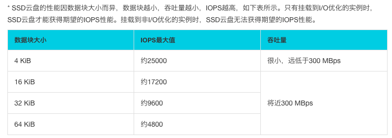

第四届阿里中间件性能挑战赛总结(复赛)
复赛题目的描述相对就简单了，但是题目难度就提升了好多……菜鸡如我已经顶不住了，还好有好多大佬打完初赛并不参加复赛了，没有丢人垫底……
这里我简单分享下我的思路，再介绍一下dalao们的解决方案……
题意分析
题目提供的信息如下：
内容：实现一个进程内的队列引擎，单机可支持100万队列以上。
校验程序分为三个阶段： 1.发送阶段 2.索引校验阶段 3.顺序消费阶段
- 各个阶段线程数在20~30左右
- 发送阶段：消息大小在50字节左右，消息条数在20亿条左右，也即发送总数据在100G左右
- 索引校验阶段：会对所有队列的索引进行随机校验；平均每个队列会校验1~2次；
- 顺序消费阶段：挑选20%的队列进行全部读取和校验；
- 发送阶段最大耗时不能超过1800s；索引校验阶段和顺序消费阶段加在一起，最大耗时也不能超过1800s；超时会被判断为评测失败。
至于具体的题目要求选手查看demo了解。
总结一下，现在需要实现一个QueueStore的子类DefaultQueueStoreImpl。需要能够存储百万数量级的消息队列，验证时并发存和并发读，要求tps能够达到最大。需要实现的接口如下：1
2
3
4
5
6
7
8
9
10
11
12
13
14
15
16
17
18
19
20
21public abstract class QueueStore {
/**
* 把一条消息写入一个队列；
* 这个接口需要是线程安全的，也即评测程序会并发调用该接口进行put；
* 每个queue中的内容，按发送顺序存储消息（可以理解为Java中的List），同时每个消息会有一个索引，索引从0开始；
* 不同queue中的内容，相互独立，互不影响；
* @param queueName 代表queue名字，如果是第一次put，则自动生产一个queue
* @param message message，代表消息的内容，评测时内容会随机产生，大部分长度在64字节左右，会有少量消息在1k左右
*/
abstract void put(String queueName, byte[] message);
/**
* 从一个队列中读出一批消息，读出的消息要按照发送顺序来；
* 这个接口需要是线程安全的，也即评测程序会并发调用该接口进行get；
* 返回的Collection会被并发读，但不涉及写，因此只需要是线程读安全就可以了；
* @param queueName 代表队列的名字
* @param offset 代表消息的在这个队列中的起始消息索引
* @param num 代表读取的消息的条数，如果消息足够，则返回num条，否则只返回已有的消息即可;没有消息了，则返回一个空的集合
*/
abstract Collection<byte[]> get(String queueName, long offset, long num);
}
难点在于系统的限制，内存8g，其中JVM的堆内存限制为4g。此外还拥有一块 iops 1w 左右；块读写能力(一次读写4K以上) 在200MB/s 左右的超强性能ssd。
在demo中，有个测试类描述了测试逻辑：
- 递增新增消息，取模后得到消息队列的序号，再向消息队列引擎发送序号和当前队列中消息数量，并记录每个消息队列的长度
- 随机挑选消息队列，获取它随机连续的十个值，比较其内容是否与索引的序号一致
- 与第二步类似，不过它会不断获取十个值直到队列中所有消息被读出。
其中涉及到一些多线程分工的细节，不展开讲解了。题目禁止使用第三方库，可以看出要实现的逻辑还是很有难度的，也就是需要使用有限制的资源支持海量的消息及百万级的消息队列。
解题
需要设计一种方式能够高效的存储消息队列，一个很直观的思路是一个文件对应一个消息队列，但是这种方式创建的文件过多，超过操作系统的文件句柄上限。
总共要存储的消息为100G，我的想法是分比如200个文件去存储这些消息，那么每个文件的大小约为100M。存储用的文件越多，并发执行时被文件锁阻塞就越少，读写效率也会高一些，但是但是实际验证的测试表明多文件并没有优势，反而占用了过多的资源。
然后就是设计存储结构，使put和get尽量能够高效的并发执行。因为消息的数量太大，所以要对消息做索引，写入的时候同时写入索引，读取也是会依据索引读取。索引可以存在文件中，或者是直接保存在内存里。保存在文件中的话相当于再用一个二级索引去查找索引文件，这里我是直接把消息的索引存在内存中了。索引记录的是消息的开始位置，所以在消息文件中还需要记录消息长度。如果为每一条消息都建立一条索引占用过多空间肯定是不可行的，这里我的索引记录的是连续的几条消息的开始位置。put写消息时会等待几条消息的到来，满足长度后写入并记录返回的写入位置和写入消息占用的总长度。get读取时读取能够覆盖所需长度的几个索引记录的信息并从中获取所需消息序列。
下面描述一下我的实现，代码量其实很小……
- 初始化DefaultQueueStoreImpl 创建FILE_NUM个文件。初始化messageListMap和queueMap两个ConcurrentHashMap，一个负责记录每个消息队列未写入的消息，另一个记录每个消息队列的索引。然后对于每个存储消息的文件，创建一个DataAccess对象。DataAccess是负责消息写入文件和读取的逻辑，之后讲解，索引使用一个POJO类Position来表示，拥有三个字段filename、index和size。
- put 不断把消息添加到指定消息队列对应的list中，直到达到MSG_LIST_LEN（一个索引记录的消息量）。对这个list加锁，随机选择一个文件，使用对应的DataAccess对象将消息写入该文件，并把写入的位置、消息长度和文件名组成索引存到queueMap中。
- get 使用queueName参数从queueMap获取能够覆盖offset到offset+size长度的索引列表，把每个索引对应的消息使用DataAccess全部取出来，从中间获取我们需要的部分返回。
- flush 因为读写是两阶段进行的，在写结束后可能有些数据还在list或者buffer中，read之前会先触发一次flush方法。这个flush会把list中的数据使用DataAccess写入文件并调用DataAccess的flush方法。
DataAccess也采用了一些特殊的设计，使用了FileChannel来负责读写文件。因为JVM限制为了4g，要利用剩余的4g空间可以使用堆外内存。通过ByteBuffer.allocateDirect来创建一个buffer，每个DataAccess都拥有一个这样的buffer。每次写入消息后，将消息写到buffer中去，当buffer满时再写入channel，重置buffer。读取则是通过channel的map方法从文件channel中映射一个MappedByteBuffer对象，在把消息通过消息长度解析出来。写入流和读取流是两个不同的channel，写入流通过append模式FileOutputStream获取，读取流通过r模式的RandomAccessFile获取。写入文件时要对文件加锁，读取则可以并发读。
次外，包含一个flush方法把buffer中的数据全部写入文件。
最后这套流程并不能跑出结果……因为4g内存爆了，直接抛出OutOfMemory错误。不过我当时调整本地测试代码的参数到题目要求是可以跑出结果的……所以一直没有看出问题在哪里，直到我有次错误的把锁加在put方法上，竟然跑出结果了……猜测是因为写入时间已经达到最大而消息还未全部写入，直接进入检索和校验阶段。最终tps为287266.3，就是这个结果勉强让我有个名次……实际上前40的团队已经有一百万的结果，而前十更是怒超2,000,000。其实可以简单算一下，4g内存对我这套流程肯定是不够用的。假设FILE_NUM为1000，MSG_LIST_LEN为50。也就是说索引的记录数为 2,000,000,000 / 50 等于 40,000,000条，一条索引所占内存大约为32bytes，总共约占1.28G。而list中消息的数量为1,000,000 * 50，乘以大小50 + 4bytes，总共约占2.7G。再加上1,000,000个队列名，此时加起来肯定已经超过4g了。我对JVM不是很熟，应该还是少算了一些内存消耗，赛后我感觉主要的一个问题是没有做消息的压缩和解压，压缩过的消息应该能省下不少内存。
赛后
事实上这次复赛我做的稀烂……而且时间比较紧也没法临时去学，只能赛后再总结学习，还是有很多收获的。
第五名思路，有点复杂，简单讲解下：
有N个桶，每个桶对应一个文件，将队列名hash取模后确定桶。并把M个队列的消息merge为一个group作为存储单元，当大小达到16k时进行写入，写入之前对队列排序，使一个队列内的内容按序相邻。
设计了两级索引L1和L2，都按时间顺序存放。L2对应一个block，记录了block在文件内的偏移，block大小和每个队列距离block起始位置的偏移。L1对应16个L2索引，记录了存放文件和block内每个队列的起始序号。
异步flush：采用RingBuffer接收block块，使用AIO对多个block块进行Batch刷盘，减少IO Copy的次数。
读取：二分查找+预读。建立一个缓存结构，类似RingBuffer，buffer与L2索引双向绑定，判断是否可用。
java IO: JavaAPI中存在三种方式，基于字节流的方式（IOStream），基于buffer的方式（FileChannel），基于Mmap（MapppedByteBuffer）。基于字节的方式是最原始的方式，效率不高。而使用channel可以以buffer为块进行IO操作，和操作系统对磁盘的IO非常相似，此外buffer可以申请堆外内存，减少gc次数。而且可以避免内存的堆内堆外复制。而mmap则会在文件大小为1-1.5G的情况下发挥出最佳性能，它是基于虚拟内存将对文件的操作映射到磁盘上。但是缺点是释放较为复杂而且其使用的虚拟内存不好控制。
此外，通过使用Unsafe的方式，java也可以越过page cache来直接操作文件，也就是directIO。
ssd: ssd需要以4k字节的整数倍进行IO才能获取最大的性能。比赛提供的ssd的性能参考：

因此，这里为了达到最高性能，至少应该以16kb为buffer大小单位进行磁盘读写。
异步读写：在程序中IO不应该阻塞逻辑线程。这也是很关键的一点。这里可以应用一个生产者消费者魔性，通过一个blockingqueue在异步IO线程和逻辑线程进行交互。
ThreadLocal：在程序中我因为使用了大量的文件从而为每个文件分配了一个文件操作工具类并分配directBuffer。事实上，少量文件满足需求，并且把buffer存在ThreadLocal中可以方便得管理。
gc 优化：能用数组的地方不要用 List。尽量减少小对象的出现，可以用数组管理基本数据类型，小对象对 gc 非常不友好，无论是初赛还是复赛，Java 比 Cpp 始终差距一个垃圾回收机制。必须保证全程不出现 full gc。
在读取整个队列时，通过预读减少IO次数可以显著提高性能。也就是模拟page cache的行为。page cache在内存有限时分配会受影响。
在读写文件时，顺序读写快于随机读写。因此在读写文件时需要加锁，确保是按顺序写入文件，不会导致文件空洞和跳读以达到最优的性能。但是加锁的顺序读写无法打满磁盘IO（iops）。因此需要进行文件分区，分多少合适呢？文件多了，锁冲突变降低了；文件太多了，碎片化太过严重，单个文件的值太少，缓存也就不容易命中。
性能优化的万金油
- Batch
- 增加单次IO的吞吐量，目标打满磁盘吞吐
- Pipeline
- 提交刷盘任务流水线化
- Buffer/Cache
- 写数据，先放buffer，再批量写
- 读数据，先放cahce，减少IO
- Non-Block
- 异步刷盘/读盘
ssd 4k
写：
批次/消息区块
单独的IO线程
读：
缓存 LRU（最近最小使用）
异步预读
msgBatch:1k
pdkblock:64k -> 存储单元
blockpool:3G -> ConcurrentLinkedQueue 调用线程写入，IO线程寻找写满的落盘 （生产者/消费者）
压缩 ascci 前两位丢弃
预读 把40000个block放入Cache，通过blockId判断
分析
写 2e9 put 100G
随机读 1e6 get 500M
顺序读 2e8 get 10G
磁盘 IOPS 10000 吞吐 200mb/s